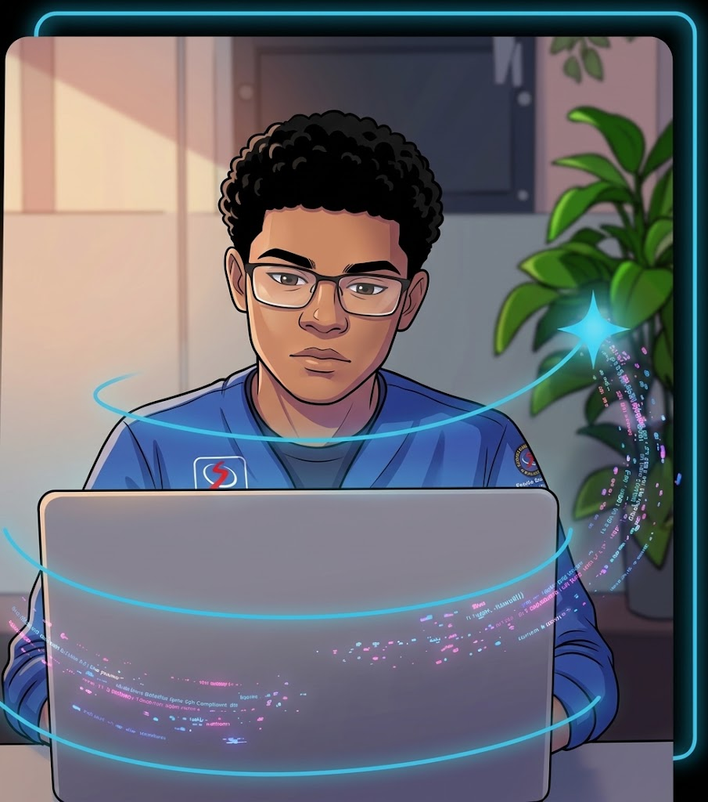

Sobre Mim
Sou desenvolvedor Front-End focado em transformar ideias em experiências digitais interativas, rápidas e acessíveis. Combino código limpo com design responsivo para criar interfaces que não apenas parecem ótimas, mas também funcionam de forma impecável.
Desenvolvedor Front-End apaixonado por transformar conceitos de design em aplicações web de alta performance, unindo código limpo e experiência do usuário (UX).
